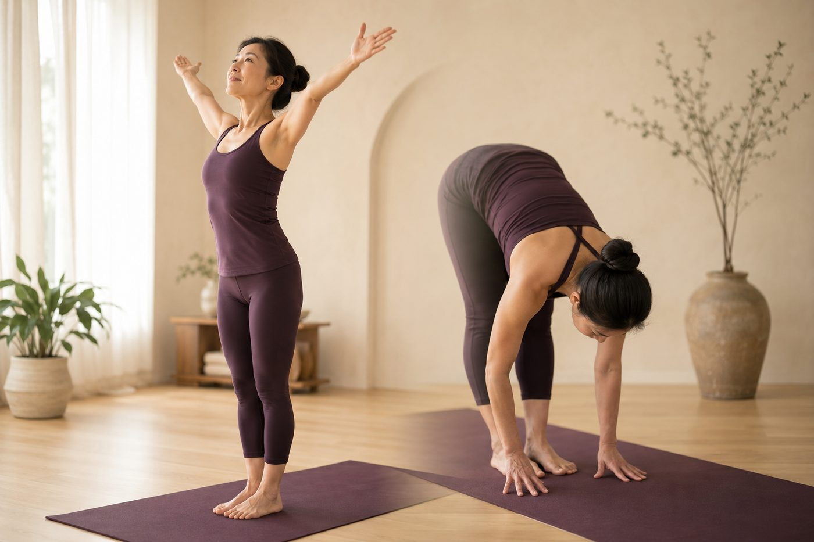

瑜伽動作配呼吸，什麼時候吸氣、什麼時候吐氣？
老師已經說「吸氣起身」，你還在前彎裡。你是要立刻追上，還是先留一拍？
錯過一拍，從哪裡接回去？
- 老師的口令「吐氣，往前。」
你慢慢前彎，還留在自己能控制的幅度。
- 你還在上一個動作「吸氣，起身。」
先留在有支撐的幅度，讓這口氣自然走完。
- 重新跟上等下一個熟悉的口令
回到站得穩的位置，再跟下一個動作。
下次跟丟口令 先穩住，再呼吸，最後才接動作。
瑜伽課常用吸氣提示延展、吐氣提示前彎或放下。吸氣時胸廓會有擴張的動作，這能當作配合節奏的線索。若忙著追口令反而屏氣，可以放慢、縮小幅度，先維持自然呼吸。吸吐提示會隨動作和教法變化，單靠配氣不能判定動作是否安全。

瑜伽前彎、伸展和起身，吸吐怎麼配？
上舉或延展時有些老師會提示吸氣，前彎或放下時會提示吐氣。先把它當成開始移動的口令，動作還沒做完也可以再呼吸，不必憋著等下一拍。下表列的是常見提示，班上有不同教法時，可以詢問老師這個口令在提醒什麼。
👆 手機版可左右滑動
| 動作情境 | 老師可能用的提示 | 跟不上時怎麼做 |
|---|---|---|
| 上舉或向上延展 | 吸氣預備或開始抬手。 | 縮小抬手幅度，讓氣息自然延續。 |
| 前彎或放下 | 吐氣時開始移動。 | 不必在一口氣內做到底。 |
| 轉位或回到站姿 | 有些課用吸氣提示起身。 | 先回到穩定位置，接上自己的呼吸節奏。 |
如果一追口令就憋氣，怎麼調整？
先停一下，讓呼吸回到你平常的節奏，再用較小幅度試一次。如果靜止時也很難感受下肋或腹部的起伏，可以先看有支點的腹式呼吸入門；想知道呼吸變急時怎麼調整動作，可接著讀呼吸如何提供練習回饋。
常見問題
吸吐做反需要重來嗎？
可以先把動作放慢，回到自然呼吸，再詢問老師口令的用意。
吐氣一定要比吸氣長嗎？
一般入門練習可以維持舒服的節奏，不用為了數拍硬拉長吐氣。
先記下最有感的日常時刻
記一個最容易忙著追口令、肩膀抬高或不自覺屏氣的動作。
約 2 分鐘，免登入、免加 LINE。做完可用 3 天觀察卡整理日常感受。
開始免費 2 分鐘體態訊號掃描 →延伸閱讀 接著看如何從有支點的姿勢感受呼吸